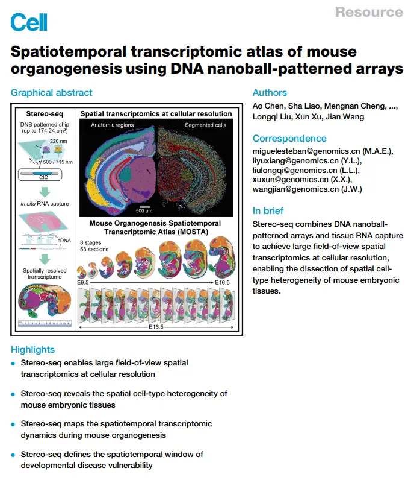
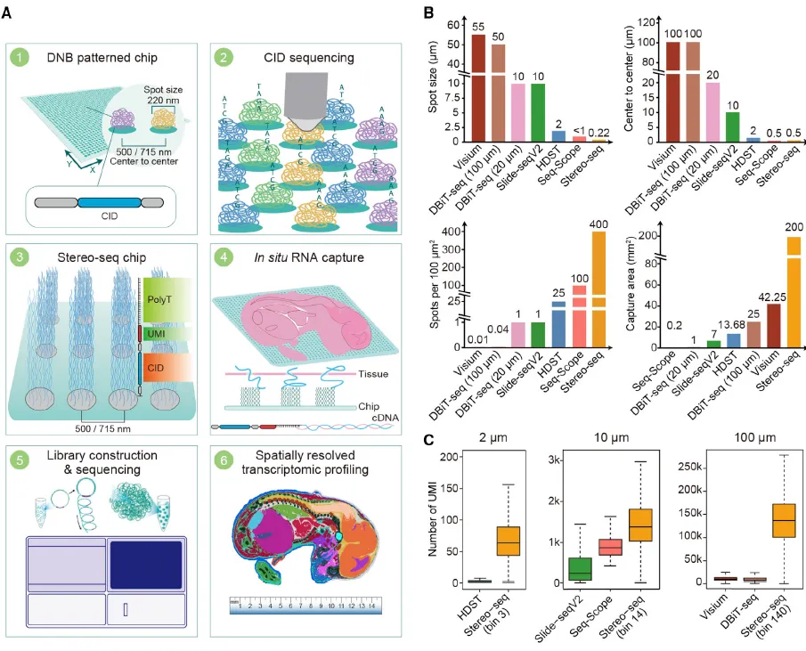
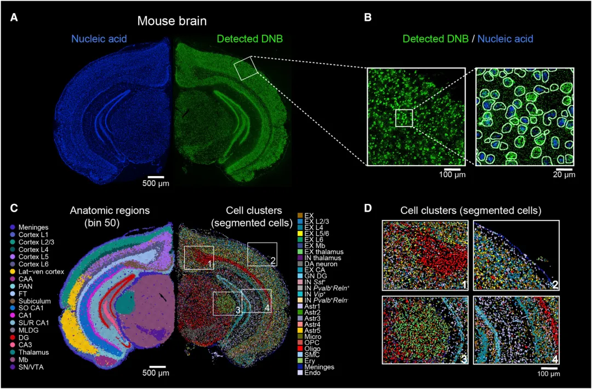
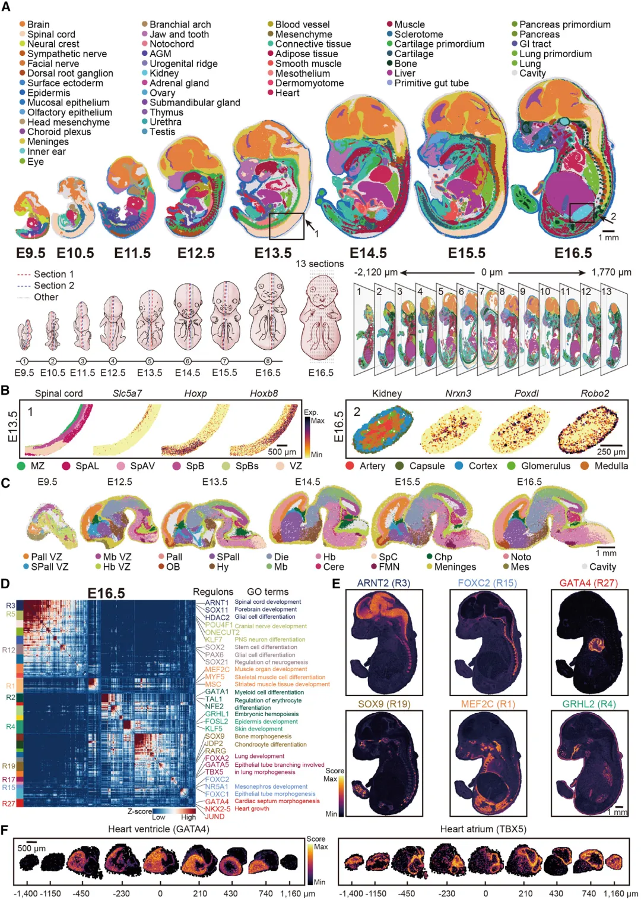
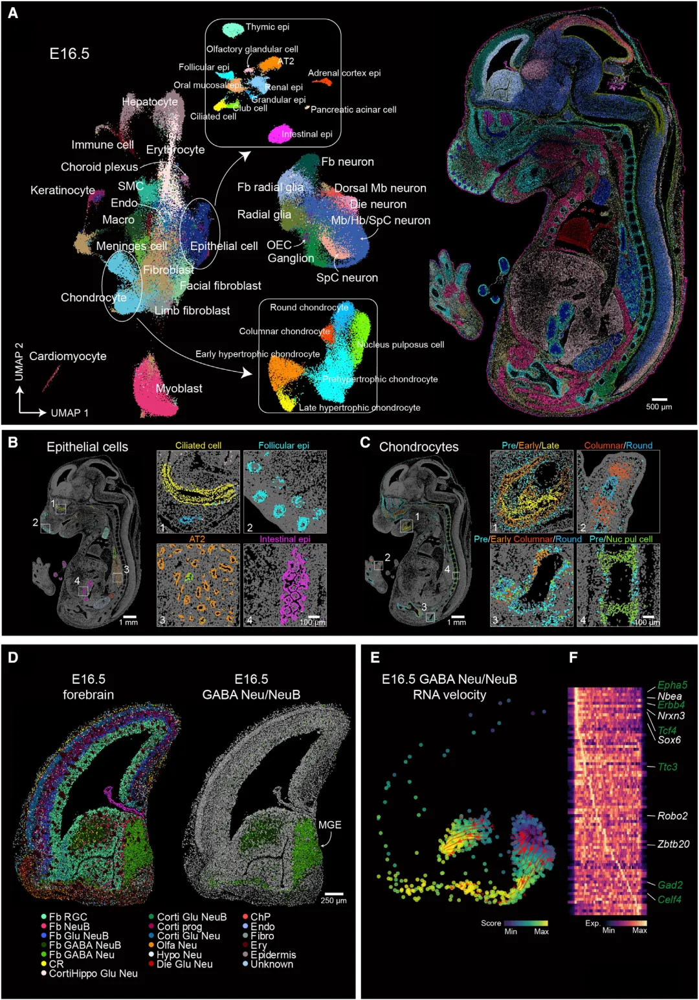
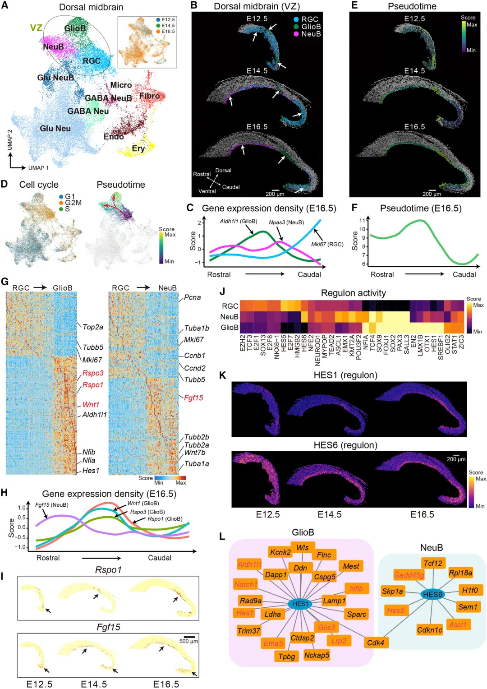

《Cell》| Stere-Seq力作
原文：https://mp.weixin.qq.com/s?__biz=MzAwMzIzOTk5OQ==&mid=2247499922&idx=1&sn=0795ec70b57723a46ccd5d643b3af11c&chksm=9b3cb9c2ac4b30d44e4218ecbdc50d210aa9c349400382f81ddb9f4f8e734fdef45453155d7b#rd 合集：空间转录组 / 文献速递
写在前面
长久以来对于RNA的原位研究通常是依赖原位杂交来实现的，近年来空间转录组的出现大大提升了RNA原位研究的通量，与单细胞一样，空间转录组是一项革命性的技术。国内的龙头单位下场开发了s pat ial e nhanced r esolution o mics-seq uencing(stereo-Seq)并对小鼠胚胎进行了"时空"水平的分析，发表了今天要介绍的这篇《Cell》： Spatiotemporal transcriptomic atlas of mouse organogenesis using DNA nanoball-patterned arrays。

研究内容及结果
显然这篇文章的作者和我的出发点都不是研究胚胎发育，因此本次解读胚胎发育的生物学意义介绍较少，我们会更侧重于空间转录组与stereo-Seq本身。此前已经有多种空间转录组技术问世，就拿大家熟知的10X Genomics的Visium来说，此前空间转录组的通病就是视野小、敏感性低、分辨率低(Visium的一个spot通常包含1~10个细胞)。这导致了在空间转录组项目运行时，往往还需要测一份单细胞转录组测序以联合分析。而stereo-Seq似乎很好的解决了这个问题。相较于10X Visium直径55μm 、间距100μm 的splot来说，stereo-Seq的spot直径为220nm ，间距为500nm ，这降低了好几个数量级(Figure 1A)。每100μm**2上包含400个spots意味着stereo-Seq的分辨率甚至能达到亚单细胞的水平。与此同时，stereo-Seq的芯片大小(1cm)也大于10X Visium(6.5mm)，最大的定制芯片能达到13.2 cm X 13.2 cm。stereo-Seq不仅在spot的分辨率与数量上优于目前常见的Visium、DBiT-Seq、Slide-Seq等(Figure 1B)，在RNA分子的捕获数量上也远高于这些技术(Figure 1C)。原理方面，芯片上预制了包含coordinate identity (CID)、molecular identifiers (UMI)、poly T的核苷酸序列，在经过透明化处理与扩散后带有poly A尾的mRNA会被对应位点的poly T所捕获，这样测序后就可以通过CID来还原mRNA分子原先所处的位置坐标。

Figure 1
既然有了这么个利器，作者便先对小鼠的大脑进行了测序，考虑到stereo-Seq的特殊性，作者开发了spatially constrained-clustering (SCC)算法用于分析更大、更复杂的组织。考虑到stereo-Seq的分辨率为亚单细胞水平，作者对切片上的DNA nanoball (DNB)及核酸进行染色，发现了二者的共定位关系(Figure 2A-B)，这为后续的基于图像的细胞划分提供了依据。划分后的细胞也可以像单细胞转录组测序那样通过非监督式的聚类进行分群与注释(Figure 2C-D)。

Figure 2
做了这些尝试后，作者开始大批量的对E9~E16.5的小鼠胚胎应用stereo-Seq(加上时间轴也就顺理成章的变成了时空转录组)，极高的分辨率也使得数据中包含了数十种细胞(Figure 3A)。加上空间转录固有的对区域划分的能力 ，甚至能在切片中单独取出某些器官的数据进行单独观察，例如脊髓和肾脏(Figure 3B)。广泛用于单细胞转录组预测的SCENIC(Figure 3D)、用于对RNA动力学解析的RNA velocity (Figure 4E-F)、拟时序分析(Figure 5B-H)在空间转录组中同样也可以应用(现在cellchat也开发了针对空间转录组的细胞通讯计算与可视化分析)，这些能够帮助我们解析胚胎发育过程中的基因调控网络。这些可以在单细胞转录组与空间转录组 中同时运用的分析方法可以节省软件开发成本与分析数据的准入门槛。

Figure 3

Figure 4

Figure 5
总结
总的来说，stereo-Seq将空间转录组带到了一个新的高度，这篇文章一方面对于胚胎发育学具有较大的贡献，另一方面对于空间转录组的分析也提供了很多思路，后期我们会考虑复现这篇文章的部分代码与结果。

如何联系我们
 公众号后台消息更新不及时，超过48h便不允许回复读者消息，这里给大家留一下领取资料、免费服务(有root权限的共享服务器,你没有体验过的全新版本!)的微信号 ，方便各位随时交流、提建议(科研任务繁重，回复不及时请见谅)。此外呼声一直很高的交流群 也建好了，欢迎大家入群讨论：永久免费的千人生信、科研交流群
公众号后台消息更新不及时，超过48h便不允许回复读者消息，这里给大家留一下领取资料、免费服务(有root权限的共享服务器,你没有体验过的全新版本!)的微信号 ，方便各位随时交流、提建议(科研任务繁重，回复不及时请见谅)。此外呼声一直很高的交流群 也建好了，欢迎大家入群讨论：永久免费的千人生信、科研交流群
大家可以阅读完这几篇之后添加给生信入门初学者的小贴士 如何搜索公众号过往发布内容

 您点的每个赞和在看，我都认真当成了喜欢
您点的每个赞和在看，我都认真当成了喜欢